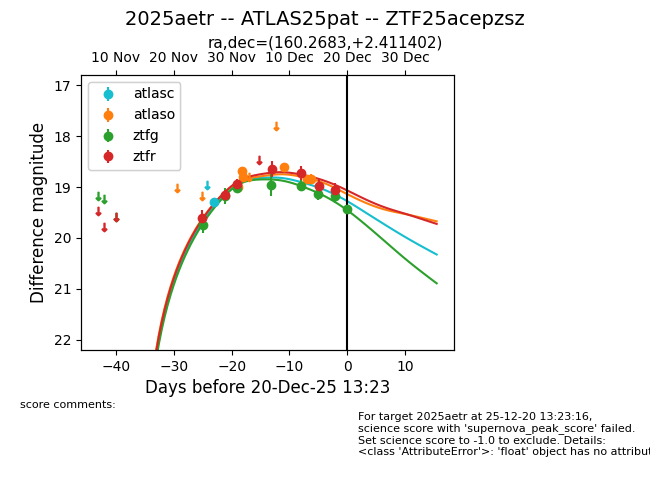
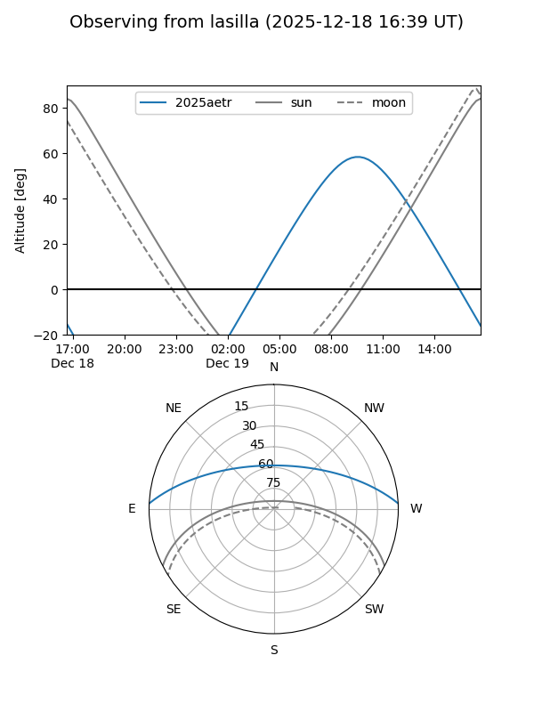
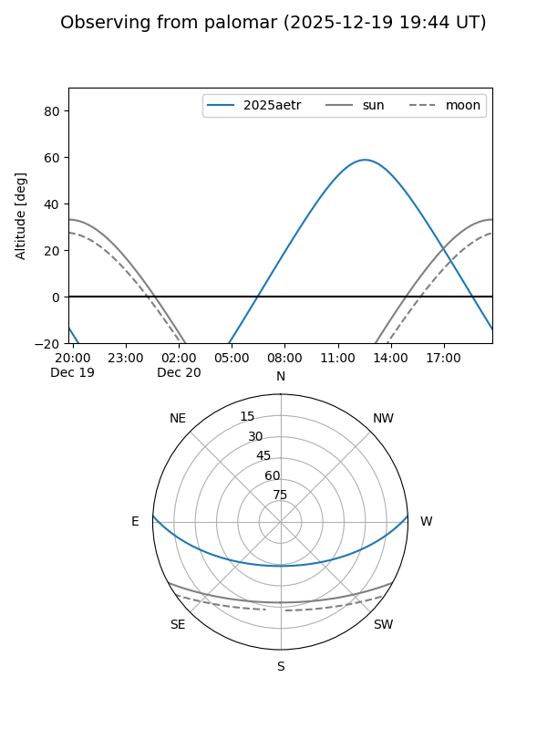
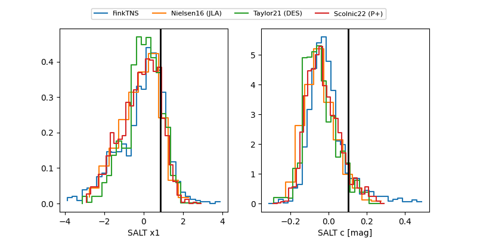

2025aetr
Target 2025aetr at 2025-12-20 14:39
Aliases and brokers:
FINK: fink-portal.org/ZTF25acepzsz
Lasair: lasair-ztf.lsst.ac.uk/objects/ZTF25acepzsz
ALeRCE: alerce.online/object/ZTF25acepzsz
TNS: wis-tns.org/object/2025aetr
YSE: ziggy.ucolick.org/yse/transient_detail/2025aetr
alt names
ZTF25acepzsz (ztf,fink_ztf)
2025aetr (tns,yse)
ATLAS25pat (atlas)
Coordinates:
equatorial (ra, dec) = 160.2683,+2.41140
equatorial (HMS+DMS) = 10:41:04.40,+02:24:41.05
galactic (l, b) = (245.6999,+50.20756)
Flags:
Photometry:
last atlasc=19.30, atlaso=18.84, ztfg=19.43, ztfr=19.18
1 atlasc, 6 atlaso, 8 ztfg, 8 ztfr detections
Lightcurve

Visibility


Additional plots
